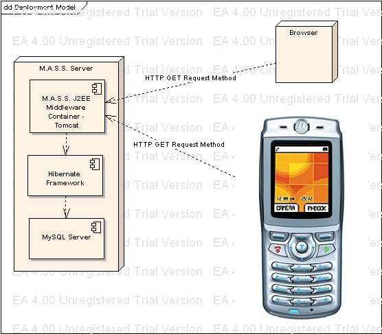

Mobile Audience Survey System (MASS) - Object-Oriented Analysis and Design using UML
Author: Marcello de Sales (marcello.desales@gmail.com). August 2004.
This section describes all the major layers and architecture of the solution. The consolidated source-code is located here.
Business Analysis
First, the analysis of the project was done by interviewing the
stakeholders from Motorola that requested the application (Prof. Paulo
Borba). The following diagram depicts the main business flow of the
application.
The basic idea is that the questioner first creates "Sessions" of
questions, pools, etc. When the system receives the new session, it
allows users to view and submit answers to open sessions. Once the
questioner closes the session, both the questioner and the "listeners"
can view global results from the pool.
Functional Requirements - Use Cases
After analyzing the business flow, the collected information origined the following use cases:
- Create New Session: the questioner creates a new session into the system;
- Close Current Session: the questioner closes an existing running session from the system;
- Answer Current Session: both the questioner and listener can submit answers the current session;
- View Session Results: both the questioner and the listener can view the session results;
- Save Closed Session Results: both the questioner and the listener can save closed results, only after viewing the session;
- View Existing Sessions: the listener can view the list of existing sessions.
The following UML Class diagram summarizes the use cases.
Non-Functional Requirements
- The main server must run using J2EE running on Apache Tomcat Application Container;
- The data must be saved in any persistence model such as a MySQL Database or in Memory;
- The client can access the data via a Mobile device running J2ME or a web browser;
- The serialized POJOs must be transmitted using the HTTP protocol, preferrable marshaled and unmarshalled using XML.
UML Deployment Model
The analysis of the requirements gave the insights for the basic system architecture. The major components of the system are:
- MASS Server: running Apache Tomcat J2EE application server as the
middleware supporting the access from clients and the lower layers
(model and data);
- MASS Client: any web browser or the Mobile device running J2ME;
- The server might include a MySQL database server, and for that access Hibernate is used as the Object-Relational Model (ORM).
The following UML Deployment diagram summarizes the system architecture.

Storyboards
The business analysis describe what the system dynamic is. For this
reason, the design of storyboards helps discussing the main
functionalities of the system, as well as identifying possible use cases
that might not be necessary. The following diagrams summarize the
storyboards for both the client and management interfaces of MASS.
- MASS Manager: all actions performed by the questioner (the one that creates sessions and manages them).
- MASS Client: all actions performed by the listener (the one that submits answers to the sessions);
The following UML Storyboard diagram summarizes the MASS Manager storyboard.
The following UML Storyboard diagram summarizes the MASS Client storyboard.
MASS Model-View-Controller
The concepts described during the analysis and the requirements
gathering gave good insights regarding the participating entities of the
system.
Model Layer
- A given session can be a questionary or a survey (poll). While the
questionary is composed by one or more questions, the survey is composed
by only one question;
- Each question is composed by at least 2 question items, which are also used by the answer given during a session;
- A global session results is responsible for collecting and generating collective information regarding sessions.
The following UML Class Diagram depicts the basic Model classes in the server-side.
Associated with the Model Layer is the Data Layer, responsible for
persisting the data into a given persistence layer. Given the
non-functional requirement that describes the use of different
persistence infrastructure as a flexibility of the system, the use of a
Persistence Broker Factory, which is responsible for switching different
Persistence layers for any of the Model classes specified.
Two different persistence layers were considered: MySQL and in-memory
data. For this reason, different Adapters were developed using Hibernate
and in-memory data structures.
* Hibernate Persistence Adapter:
* In-memory Persistence Adapter:
View and Controller Layers
The focus was on the View Layers in the mobile device using Midlets, the
MIDP API. The view directly accesses the server through the different
controllers as data handlers for each of the model classes. The access
is done to the MASS server using the HTTP requests to the server, which
uses Servlets as controllers. The following UML Class diagram depicts
the communication between the client and server views through their
controllers.
Zoomming into the client controllers, it is simple to see that all
classes are managed by 2 different CommandListeners: MassMidlet and
MassManagerMidlet. Each of them implements the use cases for the
questioner and the listener. Those controllers executes different
functions concurrently using threads. Note that it uses different XML
handlers that unmarshalls the data returned by the server using an XML
Pull-parser called "KXmlParser". The following UML Class diagram depicts
each of them.
In order to support each of the functionalities, the forms were
developed using MIDP 1.0. It is a direct association with the
Storyboards reviewed previously.
* MASS Manager forms:
* MASS Client forms:
MASS Architecture
The architectural layers can be seen at the following UML Class Diagram,
which joins the Client View focusing on the Midlet classes and the
Server view with the main classes. While the mobile client contains on
single point of data access through the HTTP requests, the server
contains different J2EE Servlets that accesses a centralized GO4 Facade.
Below the facade are the controllers and the models. It is easy to
visualize the architecture having the Model-View-Controler
design-pattern in mind.